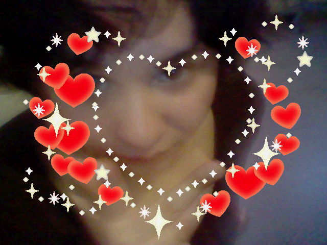
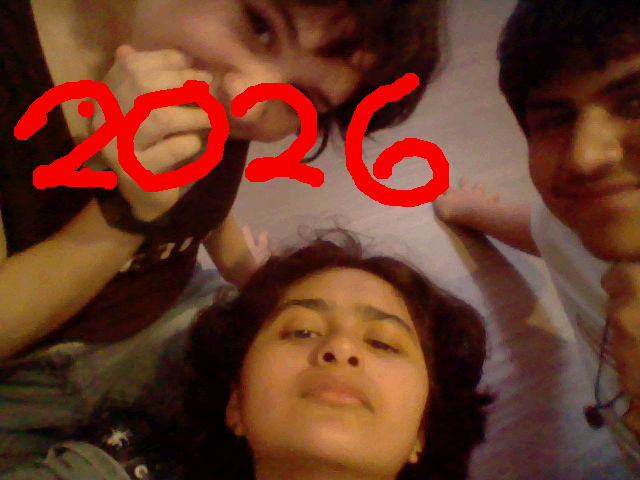
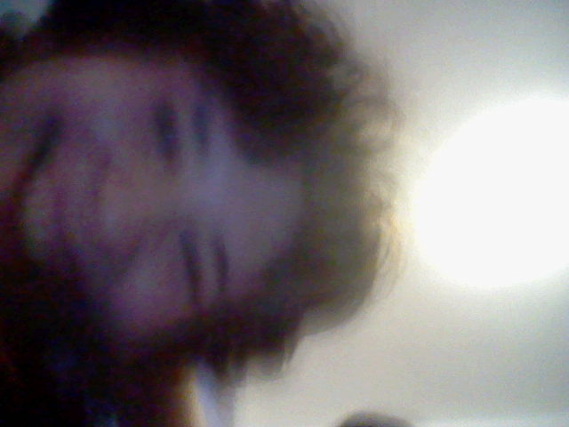
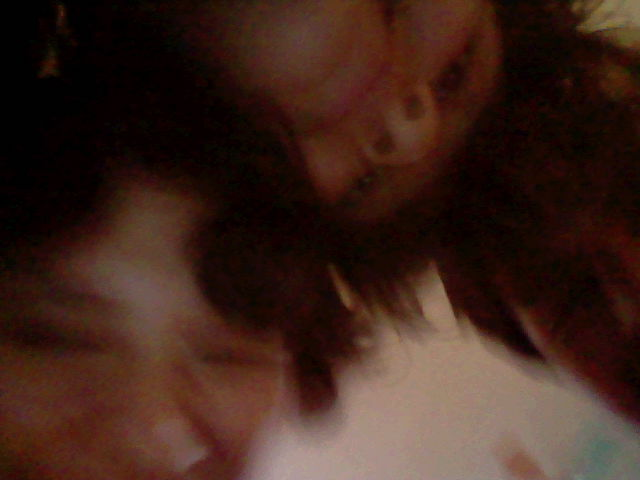
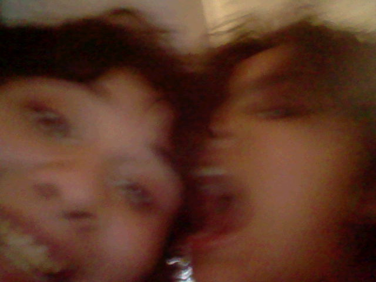
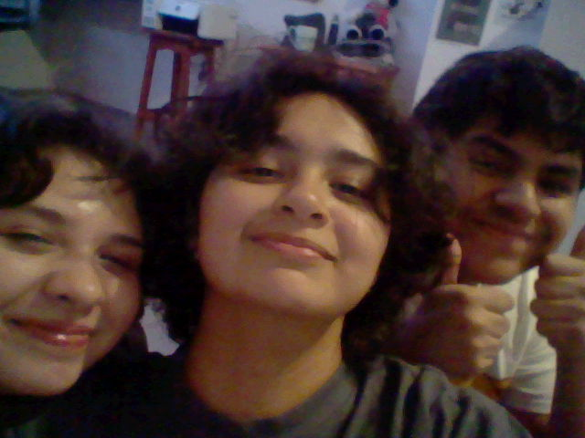
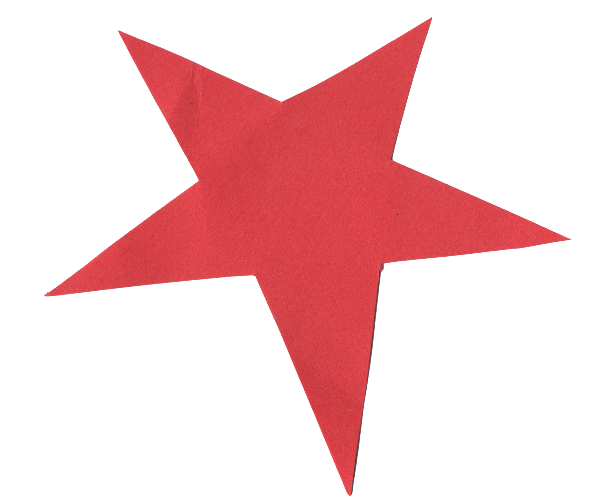
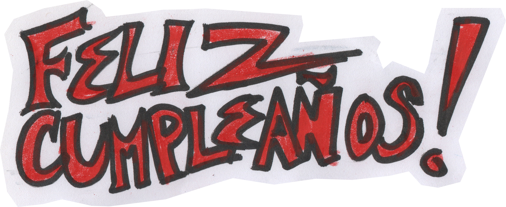
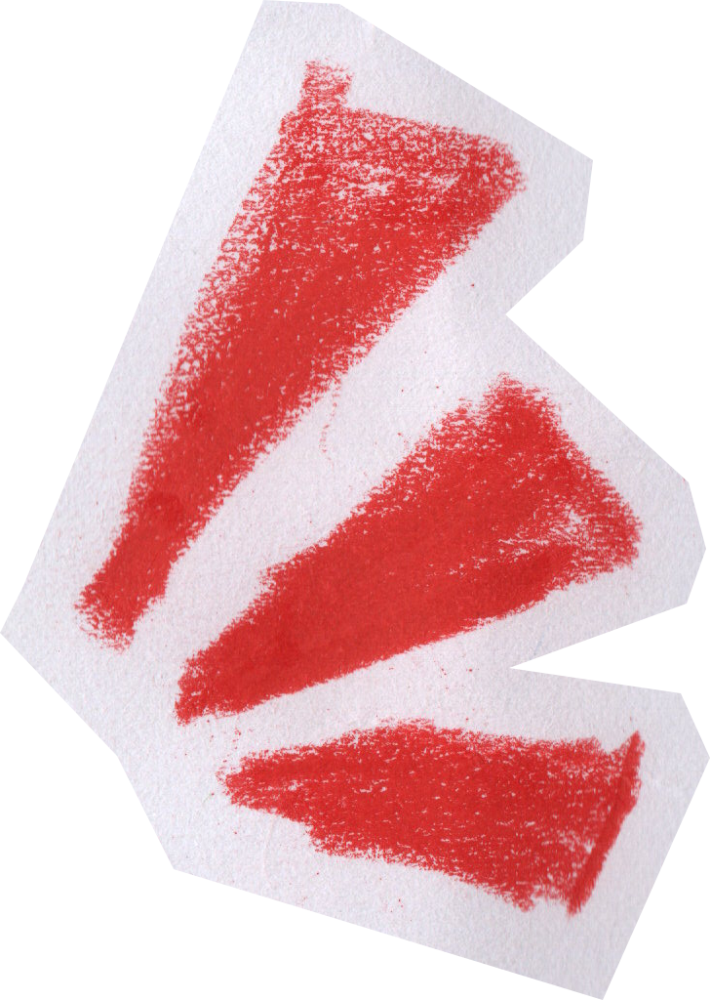
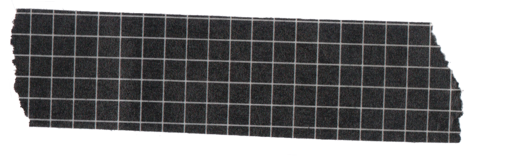
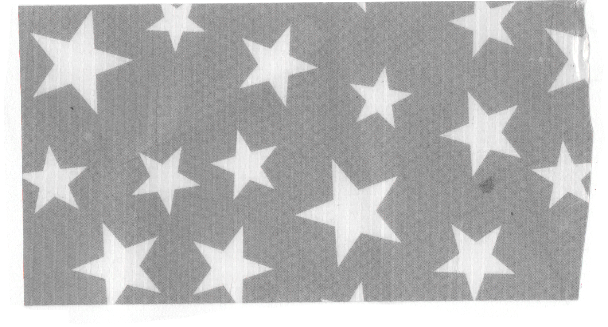
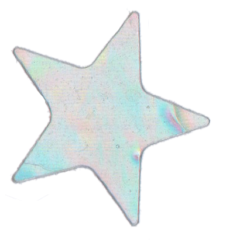
Track 1
( Recomiendo usar audifonos )
Como recordaras, poco después de haber salido de vacaciones, cuando me fui de Reynosa hacia Cancun sabiendo que no regresaría a mi hogar, pero a Monterrey, les pedí a todos ustedes recomendaciones de música.
Me gusta coleccionar canciones, descargarlas, sincronizarlas, organizarlas. Al pedirles canciones no quería que me recomendaran algo que ustedes consideraran que se podría alinear con mis gustos, quería escuchar algo personal suyo, que esas canciones pasaran por el mismo proceso que cada canción en mi colección. Pero sobretodo quería algo que al escucharlo me recordara a ustedes.
Normalmente, escucharía todas mis canciones en shuffle, pero durante esas vacaciones seguí repitiendo canciones suyas. Algo que luego se convertiría en un habito.
Pero las que mas termine escuchando fueron las de MCR. Ya había buscado canciones de la banda desde que supe que te gustaba, y seguía añadiendo ya sea por búsqueda propia o por recomendaciones.
Fun fact sobre mi, cuando me gusta mucho una canción hay un punto que escucharla varias veces no me basta, así que la traduzco. Aunque intentar traducir una canción de MCR en un avión sin poder buscar la letra me hizo dudar de mi comprensión auditiva del ingles, para el final de esas vacaciones tenia la traducción de dos canciones (y media).
Fun fact sobre mi pt.2, otra cosa que hago con canciones que me gustan mucho es hacerles cover, o mas bien aprender a tocarlas en guitarra, ya que nunca había grabado un cover. Ademas de las traducciones, termine con media tablatura de The Sharpest Lives.
Después, tuve la idea de elegir 4 canciones y grabar covers. Y si es que estas leyendo esto, logre acabarlas a tiempo, yayy.
No tengo tan buen nivel en la guitarra, y ningún conocimiento en grabación, pero puse esfuerzo en esto y espero que el resultado sea de tu agrado :D
TRACK LIST
- The Sharpest Lives
- The Black Parade
- Está fue la primera canción que planee hacerle cover, como ya había mencionado, tenía la tablatura desde antes de venir a Monterrey. Aún así, ya cuando me trajeron mi guitarra me di cuenta de su dificultad, termino siendo la última canción que acabe.
Un día cuando fui al parque me subí al juego de escalar mientras escuchaba música. Hubiera jugado un rato pero luego me di cuenta que mi DS no tenía batería, así que me quedé viendo el paisaje mientras pensaba. Justo se puso está canción y empezó a chispear. Y por alguna razón también empecé a llorar, no sé porque. Supongo que me puse sentimental.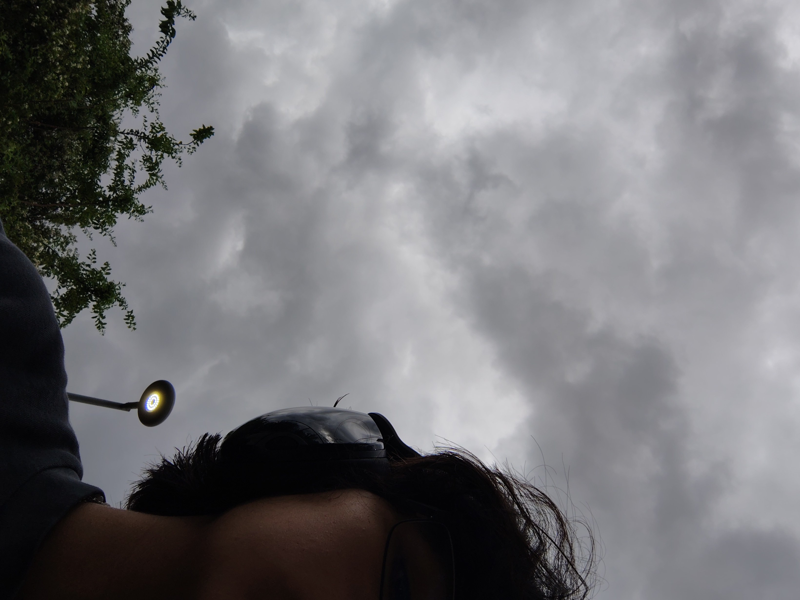
- Give 'Em Hell, Kid
- Three Cheers for Sweet Revenge
- Puedes reírte de esta si quieres...
Estaba a punto de no agregarla y fingir que eran solo 3 canciones, pero está es una canción a la que le quería hacer cover, aunque saliera mal. Si ya se me hizo muy rápido tocar la canción anterior no sé cómo no considere la dificultad de una canción de 184 bpm :(
Originalmente estaba una de mis canciones favoritas de MCR en vez de esta, pero decidí cambiarla. Una de las mayores razones es que es una buena canción para columpiarse agresivamente mientras cantas.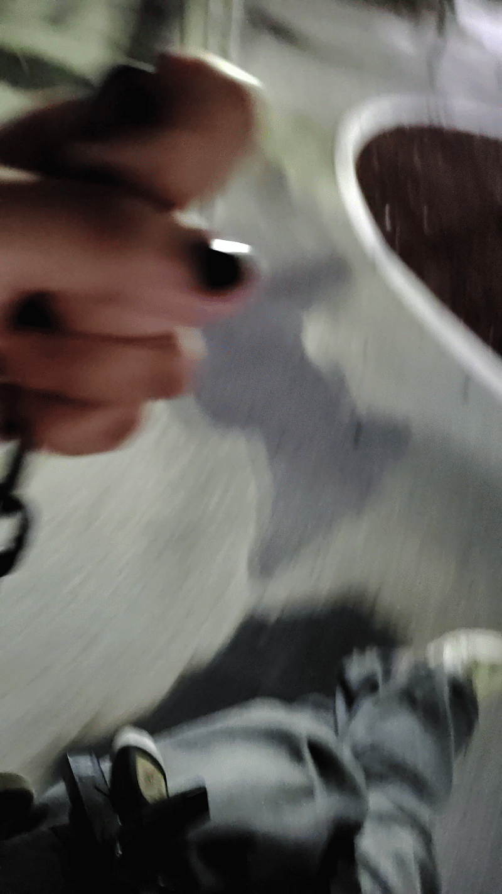
- Romance
- I Brought You My Bullets, You Brought Me Your Love
- Apenas escuché está canción sabía que le iba a hacer cover.
Probablemente está canción no te guste tanto como otras canciones de MCR, y técnicamente es una cover de una cover, pero aún así la quería incluir.
Es justo el tipo de canciones que me gusta tocar en guitarra, y el que sea solamente guitarra me permite expresarme completamente en una sola toma en vez de tener que producir cada parte. Además, aunque no tenga letra, tiene su propia forma de trasmitir algo. Hice algunos cambios al editarla, aún inspirandome de la canción original, pero con una diferente vibra.
En conclusión, me gustan mucho las canciones de guitarra clásica, y la forma en que la original de MCR está producida para establecer cierto ambiente sin depender en otros instrumentos o layering. Bueno, ya dejó de hablar.. - The Light Behind Your Eyes
- Conventional Weapons
- No, no sé tocar el piano
Y tampoco tengo uno acá.
Por alguna razón tome la decisión de hacer las partes que no eran guitarra en piano. La guitarra fue mucho más simple de grabar en comparación a las otras canciones, y ya que eran acordes simples y rasgueos comunes, en verdad disfrute grabarla.
Para el piano, practique en los del Tec, pero ya que tanto yo cómo los pianos solemos estar ocupados. Practicaba en la noche cuando no había tanta gente, y aunque aún con la práctica no salió tan bien, la verdad fue divertido :D
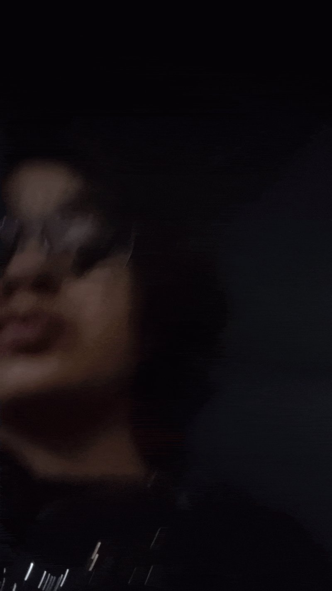
Yendo a precticar :D 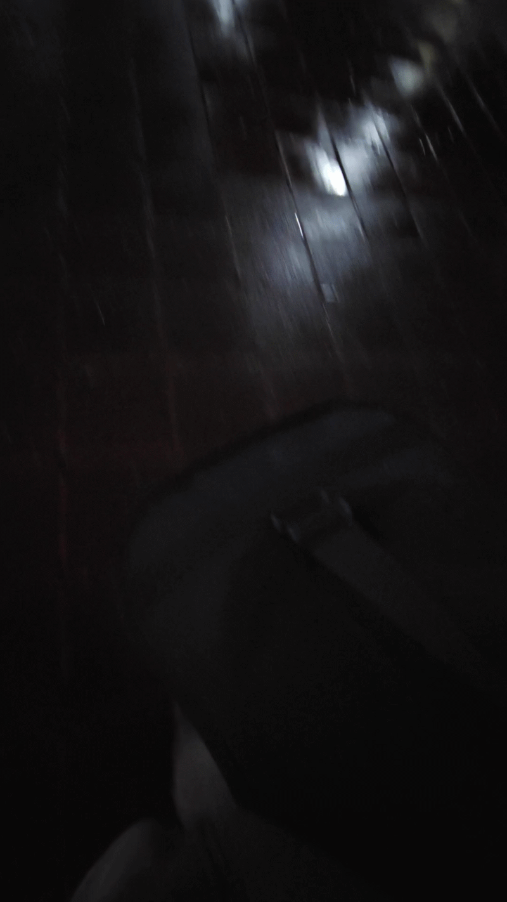
Ya que había mucho ruido en el Tec tuve que grabar en Reynosa, un agradecimiento a Felipe por ayudarme a grabar :p
Recuerdo mis primeros días aquí, poner música suya para sentir que los tenia cerca aunque estaban a 2 horas de distancia. Cuando estaba sola en inducción, o en los primeros días de clase.
Ahora tengo amigos aquí, gente con la que puedo salir de vez en cuando. Pero frecuentemente salgo por mi cuenta y escucho MCR en repeat.
Y podría invitar gente, pero en esos momentos prefiero no hacerlo. En esos momentos la única compania que preferiría a mi misma seria ustedes. No tengo idea ya cuantas veces salí al parque a escuchar música deseando que estuvieran conmigos.
Una de mis cosas favoritas de estar aquí es el poder salir cuando yo quiera y poder caminar afuera por horas, de forma segura, si así yo quisiera. Pero lo único que mejoraría eso seria poder compartirlo con ustedes.